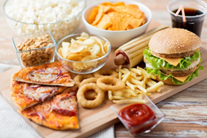
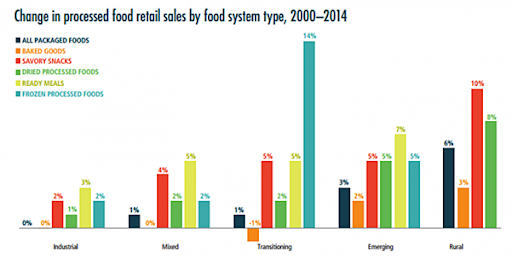
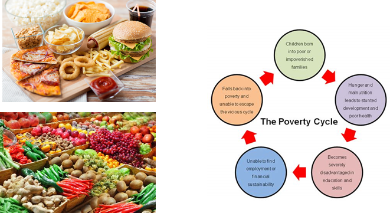
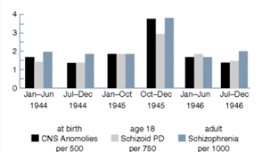
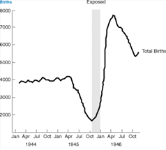

On bad days, I lie in bed awake at night and an essay flows out of me. The thoughts of technoscience bleed back into the writings of my final year project on NRF-2 and mental health, and then my deranged thoughts bleed back into this thesis.
What does it mean to eat anyway? Eating is the main way to provide the required nutrients for one’s nervous system, allowing the body to For example, consuming cruciferous vegetables rich in isothiocyanates would allow the body to optimize physiological functions like learning and memory. This compound directly upregulates NRF-2, the gene transcription factor that manages these functions in the brain. However, the inverse is also true. If a subject’s diet contains toxicants which stress their nervous system, it could result in negative mental health results such as hyperactivity in children.
However, given a choice, one should opt to eat fresh foods, as the constant consumption of heavily processed foods could Human bodies are unable to deal with high doses of sugars and the concomitant surges of insulin to manage blood glucose levels. As such, by exposing the body to artificial sweeteners which possess high levels of sugar, such as High Fructose Corn Syrup (HFCS), the human body would release adrenalin to manage this rise in sugar level. Consequently, as adrenalin is an acute stress hormone, it would trigger numerous mental issues such as anxiety and fatigue.

A simple lesson to be gleaned is that heavily processed food is unhealthy and should be avoided. But how much is the individual really in control of his own actions? In reality, there are always multiple societal factors that affect the choices made when purchasing and consuming food. Indeed, as displayed in Figure 1 below, the purchase of processed food has increased over the years, which hints at this multi-dimensionality in the act of eating. Again: insofar as sociological factors such as socioeconomic background could be determinants of one’s fate, how much control do we actually have over our actions?
 Figure 1: Global Changes in Processed foods from foodsource.org.uk
One of the major influencers of societal decisions is the factor of cost. The prices of heavily processed foods tend to be comparatively lower than fresh ones, as heavily processed food can be easily produced at a higher rate and are often subsidised by governments. [1] Sadly, as shown in Figure 2 below, the popularity of cheap and heavily processed foods that lack proper nutrients makes it difficult for the poorer members of society to escape from the poverty cycle, as their malnourishment limits their abilities to perform. Consequently, this also highlights the importance of co-production by showing that science and society are not mutually exclusive, as malnutrition can directly result in societal consequences.
 Figure 2: The Poverty Cycle, from genusixproject.com
Generational Impact
However, the effects of the lack of nutrition do not simply end there (madness!). Research has shown that this lack of nutrition may have further repercussions as it could affect the offspring of the malnourished. This makes it even harder for families to break out of the poverty cycle. Moreover, a study exploring the effects prenatal nutrition on adult mental health suggests that a lack of proper nutrition would result in an uptick in mental health issues in the population (shown in the Figures below). [1]
 
Scientists attribute the reduction to the normal birth rate, seen The period highlighted coincides with the period when the Netherlands were occupied. to the Dutch famine of 1944 to 1945 and the accompanying lack of proper nutrition. They also added that the lower birth was correlated with a higher incidence of mental health issues, such as schizophrenia, developing as evidenced in Figure 3.
Their affected mental health was ultimately caused by the subjects’ parents lack of nutrition and can be attributed to various societal issues. World War II triggered famines due to food rationing, limiting the amount of nutrition received by individuals. This societal issue inevitably caused their children’s mental health to be affected due to malnutrition, as reflected in Figure 3. [1] This relation between famine and the development of mental issues also highlights the importance of co-production, as it reflects how societal issues directly affect scientific/medical ones.
Conclusion
It can thus be concluded that the effects of nutrition, or most importantly the lack of it, have a direct impact on both the physical and mental health of members of society. It is important that the use of science to assess the effects which food has on society, must not be impervious to socioeconomic factors of the eater. Most importantly, it further cements Jasanoff’s idea of co-production, as they display how science and society are intrinsically tied to each other, as the lack of proper nutrition, due to societal reasons such as poverty, may cost negative consequences, some of which may be long lasting.
References
(1) Harper, K., Susser, E., Clair, D., Bendich, A., & Deckelbaum, R. (2010). Linking Prenatal Nutrition to Adult Mental Health. In Preventive Nutrition: The Comprehensive Guide for Health Professionals (pp. 705–720). Humana Press. https://doi.org/10.1007/978-1-60327-542-2_27 (2) Galil, N., Hedaya, R., Marian, M., & Mullin, G. (2017). Nutrition and Mental Health. In Integrating Nutrition Into Practice (1st ed., pp. 407–418). CRC Press. https://doi.org/10.1201/b22342-18 (3) Shetreat-Klein, M., Marian, M., & Mullin, G. (2017). Neurology and Nutrition. In Integrating Nutrition Into Practice (1st ed., pp. 419–438). CRC Press. https://doi.org/10.1201/b22342-19 (4) Why are processed foods cheaper than fresh foods? | Eating and Society. (2020). Retrieved October 18, 2020, from Sharecare website: https://www.sharecare.com/health/eating-and-society/why-processed-foods-cheaper-fresh